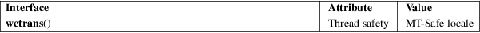

wctrans − wide-character translation mapping
Standard C library (libc, −lc)
#include <wctype.h>
wctrans_t wctrans(const char *name);
The wctrans_t type represents a mapping which can map a wide character to another wide character. Its nature is implementation-dependent, but the special value (wctrans_t) 0 denotes an invalid mapping. Nonzero wctrans_t values can be passed to the towctrans(3) function to actually perform the wide-character mapping.
The wctrans() function returns a mapping, given by its name. The set of valid names depends on the LC_CTYPE category of the current locale, but the following names are valid in all locales.
"tolower"
− realizes the tolower(3) mapping
"toupper" − realizes the toupper(3)
mapping
The wctrans() function returns a mapping descriptor if the name is valid. Otherwise, it returns (wctrans_t) 0.
For an explanation of the terms used in this section, see attributes(7).

C11, POSIX.1-2008.
POSIX.1-2001, C99.
The behavior of wctrans() depends on the LC_CTYPE category of the current locale.
towctrans(3)